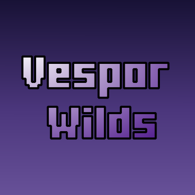
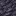

Welcome to Vesper Wilds

Whether you are a builder looking for a new color palette or an explorer seeking a peaceful retreat, Vesper Wilds brings a touch of magic to your world.
---
🌟 Key Features
🌲 New Biomes
- [[The Velvet Forest]]: A dense, magical forest where it always feels like twilight.
- [[Vesper Wilds]]: The core region containing unique flora and fauna.
🧱 Building Blocks
- [[Velvet Logs & Planks]]: Rich, dark purple wood perfect for cozy builds.
- [[Velvet Leaves]]: Features custom falling leaf particles that react to the wind.
- [[Vesper Stone]]: A new decorative stone found deep beneath the wilds.

🔮 Magic & Resources
- [[Velvet Berry]]: A new food source that grows on Velvet trees.
- [[Vesper Gem]]: A rare crystal with unique properties.
🚀 Getting Started
New to the mod? Check out these guides to begin your journey:
| For Players | For Modpack Makers |
| 📖 [[Getting Started]] How to find the biome and survive. |
⚙️ [[Configuration]] How to adjust spawn rates and settings. |
| 🔨 [[Crafting Recipes]] A full list of every new item. |
🐛 [[Known Issues]] Track bugs and compatibility. |
| 🗺️ [[Biome Guide]] Detailed breakdown of generation. |
📦 [[Changelog]] See what's new in version 0.0.15. |
---
📥 Installation
Requirements:- Minecraft 1.21.1
- Fabric Loader
- Fabric API
- Terrablender
💬 Community & Support
Vesper Wilds is developed by WarpGamesTV. Join the community to share your builds, suggest features, or report bugs!
- 📺 Twitch: WarpGamesTV
- 🎥 Kick: WarpGamesTV
- 💬 Discord: Join the Warp's Lounge
- 🐞 Issues: Report a Bug
*Wiki maintained by WarpGamesTV.
Last updated: March 17, 2026